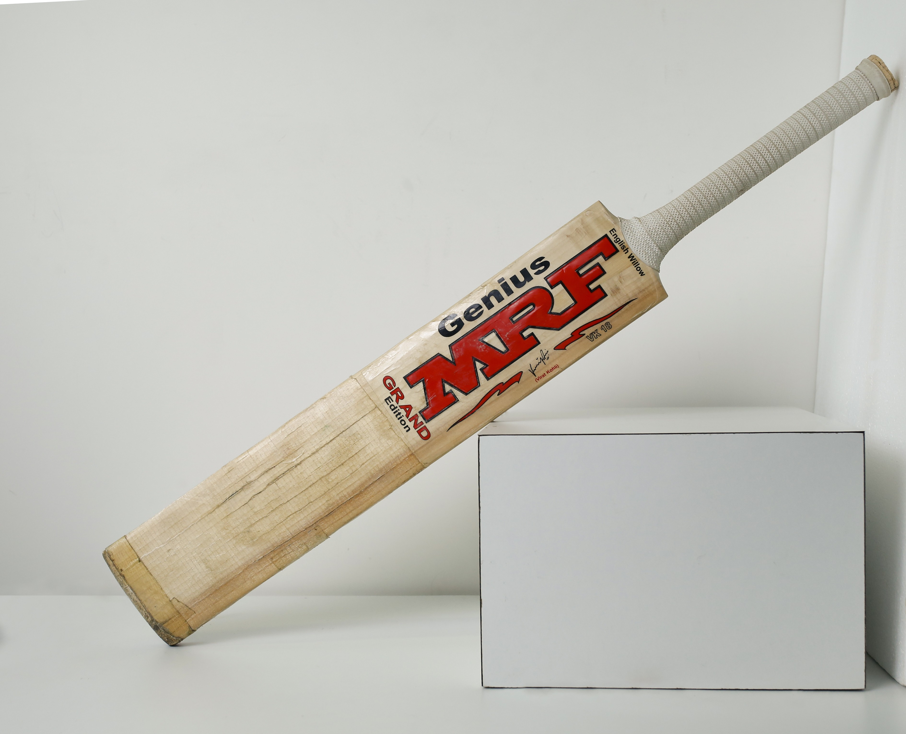

Bid-Stop LPU
Your one-stop solution for bidding
Your one-stop solution for bidding
|
Introducing the Virat Kohli printed ( Original ) autograph Miniature bat, a must-have collectible for cricket enthusiasts and fans of the legendary Indian cricketer.Virat Kohli was born on 5 November 1988 in Delhi into a Punjabi Hindu family. His father, Prem Kohli, worked as a criminal lawyer and his mother, Saroj Kohli, served as a housewife. He has an older brother, Vikas, and an older sister, Bhawna.[6] Kohli's formative years were spent in Uttam Nagar. He commenced his early education, according to his family, Kohli exhibited an early affinity for cricket as a mere three-year-old. He would pick up a cricket bat, display natural skill, and request his father to bowl to him This meticulously crafted miniature bat measures 12 inches in size, making it a perfect display piece for your desk, shelf, or wall.Virat Kohli Printed Autograph Miniature Bat. These are Small bat for Showpiece and People use them to Gift Purpose. And this bats could be gifted to others cricket lover of Virat kohli fan.You also use for parmotional type mini bat In 2013, Kohli was ranked number one in the ICC rankings for ODI batsmen. In 2018, he was ranked top Test batsman, making him the only Indian cricketer to hold the number one spot in all three formats of the game. He is the first player to score 20,000 runs in a decade. |
 | |
|
Current Bidding Price: Rs. 50000 No. of Bids: 65 Time Left: 4h 05m |